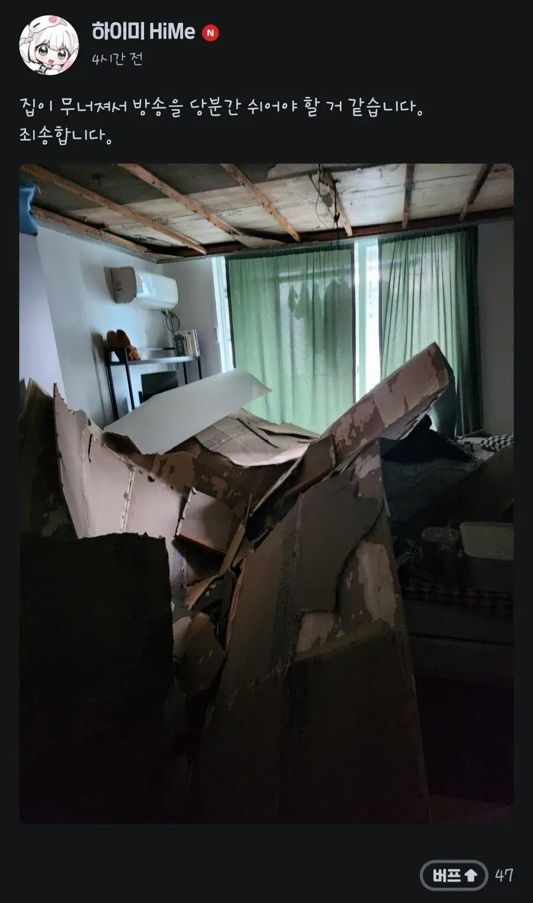

ㄷㄷ

ㄷㄷ
천장이 무너졌다안카요!
저러면 집주인은 천장공사만으로 끝날일을
컴퓨터, 옷, 가구, 기타등등이 추가되나?
당분간 임시로 지낼 숙소비도 내야 할걸
흔들흔들열매는 존재한다! 이런건줄 알았는데
심각하네ㄷㄷ 안다쳐서 다행이라 해야하나
왐마 니기랄꺼 이런건 첨보내요잉
어떻게 이렇게 깔끔하게 떨어짐?
나무 각목으로 만든 뼈대에 석고판을 ㄷ자 모양 소형 핀을 쏴서 고정 하는 방식인데 석고가 물 먹으면서 약해지니까 핀 박힌 부분이 먼저 바스러져서 쏟아진거
대충 수도쟁이 집수리쟁이 밥 숟가락 내려놓고 달려오는 중
이런 그을레같은 천장
저게 그 와르르맨션인가 그거냐
왐마 니기랄거
안카요!
휴방할라고 집을 부셧네
스엑스~ 하러갔네
왐마 니기럴거
이건 그으을래 템플릿이냐? 안카요? 템플릿이냐?
왐마니기럴거 스엑스~ 하러갔네
이런건 첨보네요잉
왐마 니미럴거 내 살다살다 이런건 첨보네요잉
스엑스하려고 천장을 내려앉히네
글레같은련
조빠은 천장!
하야시가 버튜버도 하네
크리스마스 이브 때 할머니 제사라고 휴방한 BJ한테
스엑스 하러 가는데 구라 치지 말라고 지랄하니까
바로 가족들이랑 제사 지내고 난 사진 올린 거 기억나네 ㅋㅋㅋㅋㅋ
뭐지? 스엑스를 하려는 것인가?!
천장이 사라졌다 안카요
휴방사유 레전드는 한달에 한 번 있는 그 날이라서 휴방한다던 공혁준이지ㅋㅋㅋㅋㅋㅋㅋ
대충 천장이 무너졌다안카요! 탬플릿